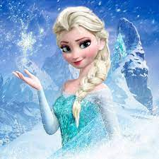

Elsa is the perfect mythic character – magical and larger than life. Grateful her kingdom now accepts her,she works hard to be a good queen. But deep down she can’t help but wonder why she was born with powershe Snow Queen character, neutral but cold-hearted in the original fairytale and villain in numerous adaptations of the character, proved difficult to adapt to film due to her transparent depiction. Several film executives,including Walt Disney, attempted to build on the character, and a number of scheduled film adaptations were shelved when they could not work out the character Elsa is a popular character among Disney fans, but her character arc underwent a drastic change before Frozen even came out Most of the previous Disney princesses were teenagers during the movies; for example, The Little Mermaid clearly states that Ariel is 16 years old at the time. Cleveland writes that, according to Frozen director Jennifer Lee, Elsa is not a teenager.
